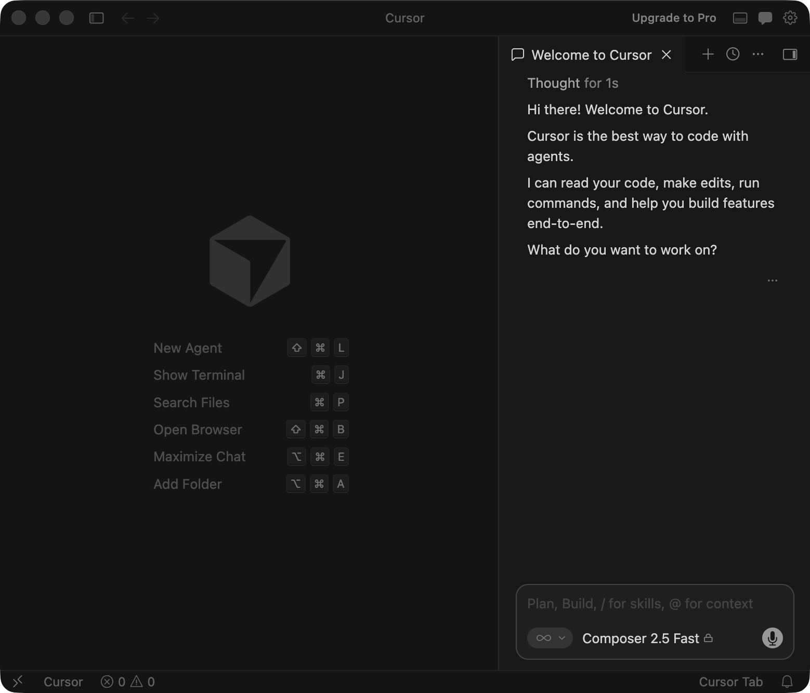
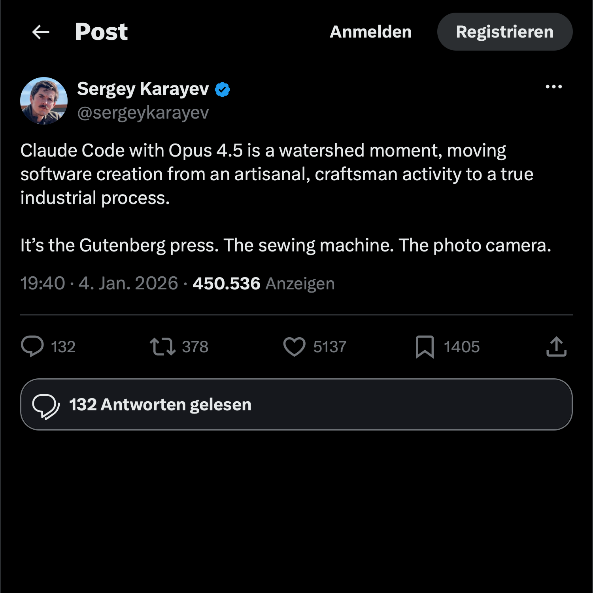
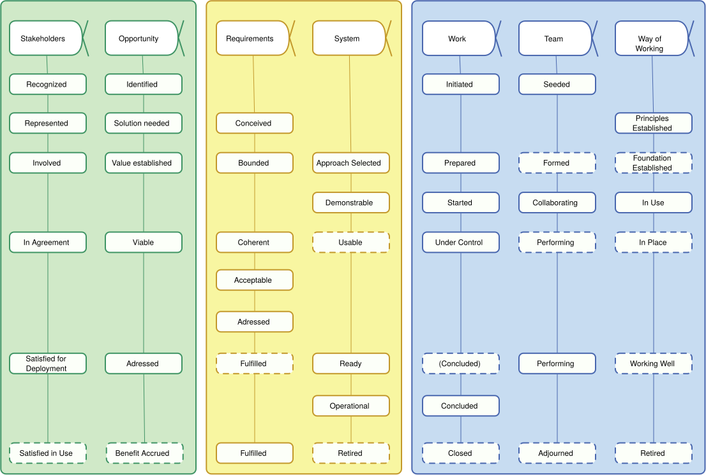

flowchart LR
U[User Prompt]
M[Model]
D{Need tool?}
F[Structured Function Call]
T[Tool or External API]
R[Tool Result]
A[Final Answer]
U --> M --> D
D -- yes --> F --> T --> R --> M
D -- no --> A
Evidence-Gated Agentic Delivery
ICSOFT 2026
The Agentic Age?
Function Calling (2023)
- Function calling made model-driven tool and API use technically viable.
- This enabled a new class of agentic workflows, but not yet broad everyday practice.
Computer Use and MCP (2024)
- Computer Use and the Model Context Protocol (MCP) expanded the action radius of agents.
- GUI interaction
- Richer context handling
- More complex task execution
- However, significant user effort was still needed to orchestrate and review agentic work.
Generated with Nano Banana 2
IDE Agent Tools (2025)
- IDE agent tools such as Cursor, Kiro, and similar editor-integrated assistants made multi-step agentic work broadly accessible to developers.
- This marked the transition from isolated demos to routine developer workflows inside everyday IDEs.

Claude Opus 4.5 (2025)
- Opus 4.5’s sustained multi-step performance and stronger tool use made agent workflows harder to dismiss.
- The key question shifts from model intelligence alone to operational control, review, and evidence.

Core Claims
Overview
- Agentic development changes process bottlenecks, not only coding speed.
- Throughput can rise faster than justified progression.
- Progress should be tied to explicit evidence, not only activity.

Generated with Nano Banana 2
The Software Crisis Revisited?
Why Change Is Necessary
- Bottlenecks shift from production to review and verification.
- Agent action radius expands, increasing potential blast radius.
- Risk of quality degradation accelerates if progression is not gated.
- Empirical signals of quality issues in LLM-generated code are already visible.
Paradigm Shifts
„With every major paradigm shift [...] industry throws out all they know about software development and start all over with new terminology with little relation to the old one.”
Jacobson et al., The Essentials of Modern Software Engineering, 2019
Vibe Coding
- Coding guided by intuition and informal shared understanding.
- Less reliance on written specifications and formal constraints.
- Emerges naturally with agent-based workflows.
- Risk: decisions become implicit, hard to audit, and difficult to reproduce.
Spec-driven Development
Specifications don’t serve code—code serves specifications.
The Product Requirements Document (PRD) isn’t a guide for implementation; it’s the source that generates implementation.
Technical plans aren’t documents that inform coding; they’re precise definitions that produce code.
Source: GitHub Spec Kit
Positioning: Is this New?
- Core ideas are not new:
- requirements discipline
- explicit handoffs
- traceability
- staged refinement
- The shift is operational: these practices move from optional to mandatory.
Essence
What Is Essence?
- A stable, model-agnostic kernel of software engineering elements.
- Provides a common language and structure for describing practices.
- Separates “what” (alphas) from “how” (practices).
- Enables systematic composition and comparison of practices.
Alphas and Practices
- Alphas: key elements that “mature” during a project (e.g., Requirements, System, Work).
- Practices: specific methods or techniques that influence how alphas evolve (e.g., User Stories, Pair Programming, Test-Driven Development).
- Essence allows us to map new practices onto a stable conceptual framework.
Alpha Progression

How Does this Help?
- We encounter another paradigm shift where a lot of existing knowledge is at risk of being ignored.
- The Essence kernel provides a stable reference point that does not change with the latest hype.
- It allows us to reason about new practices in terms of their impact on alphas and their progression.
Emerging Agentic Workflow Patterns
Converging Recommendations
- Decompose tasks into constrained subtasks.
- Curate context selectively and just-in-time.
- Keep humans responsible for risk and release decisions.
- Build validation hooks into the normal flow.
- Prefer inspectable, diffable, reproducible artifacts.
Evidence-Gated Agentic Delivery
Overview
- Memorable label, not meant to replace existing frameworks.
- Evidence-gated: progression is tied to explicit evidence, not just activity.
- Agentic: humans and agents collaborate in a hybrid workflow.
- Delivery: the focus is on producing usable, reviewable artifacts, not just code generation.
Why Gates?
- Classical models already use gate-like controls.
- Scrum: Definition of Done, Sprint Review, release decisions.
- Unified Process: phase and milestone checks.
- Not using gates is a risk: throughput can outpace justified progression, leading to hidden quality debt.

Generated with Nano Banana 2
Why Evidence?
- Provides a concrete basis for progression decisions.
- Ensures that advancement is justified by actual results, not just activity.
- New in the agentic age: tighter coupling of progression to explicit evidence under much higher throughput.

Generated with Nano Banana 2
What is Good Evidence?
- Inspectable: can be reviewed and understood by humans.
- Diffable: changes can be compared to previous states.
- Reproducible: artifacts can be recreated from the same inputs.
- Examples:
- reviewed code deltas
- test results
- policy checks
- deployment evidence
- human sign-off with residual risk statements
Agentic - New Roles
| Role | Primary responsibility |
|---|---|
| Human | Direction, prioritization, architecture, risk acceptance, release |
| Agent | Exploration, transformation, implementation deltas, review preparation |
| Automation | Build, tests, policy checks, security checks, deployment evidence |
| Stakeholder | Intent clarification and acceptance validation |
Delivery Loop
flowchart LR
A[Intent and constraints]
B[Bounded agent execution]
C[Reviewable delta]
D[Evidence bundle]
E{Gate satisfied?}
F[Advancement]
G[Revise slice]
A --> B --> C --> D --> E
E -- yes --> F
E -- no --> G --> B
What is New?
- Explicitly tying progression to evidence, not just activity.
- Triadic collaboration in customer-facing work: humans, agents, and stakeholders have explicit responsibilities.
- Native support for reviewable, diffable, and reproducible artifacts as a first-class concern.
Minimal Adoption Path
- Add an evidence record to pull request workflow.
- Extend Definition of Done with evidence completeness.
- Keep sign-off accountable and role-explicit.
- Start in one team and one repository.
- Compare outcomes with existing baseline empirically.
Operational Principles
Design Principles (1)
- Prefer small reviewable slices.
- Make evidence a progression criterion.
- Treat context as an engineered resource.
- Keep autonomy bounded and legible.
Design Principles (2)
- Preserve diffability and reproducibility.
- Pull operational concerns earlier.
- Use executable alignment artifacts where intent is contested.
- Make stakeholder validation explicit and continuous.
Discussion
Research Agenda
- Compare full delivery configurations, not isolated prompts.
- Measure review load under different agent-role boundaries.
- Test effect of evidence gates on release confidence.
- Study domain effects in regulated and safety-critical contexts.
- Evaluate triadic collaboration in UI-heavy projects.
Limitations
- Conceptual contribution, not yet controlled validation.
- Operational terms need sharper measurement in follow-up studies.
- External validity is currently bounded by available evidence.
- Baseline comparison is analytical, not empirical benchmarking.
Conclusion
Takeaways
- Agentic delivery requires explicit process adaptation.
- Speed without evidence risks hidden quality debt.
- EGAD links alpha progression to concrete, reviewable evidence.
- Human accountability remains central in hybrid workflows.